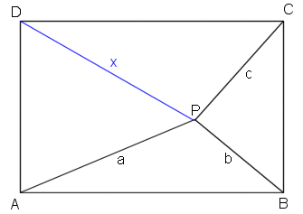

PUZZLE 30: Entfernung eines Baumes

Und wieder einmal eine einfachere Aufgabe (Pythagoras genügt).
Auf einem rechteckigen Grundstück ABCD steht ein Baum P. Er ist a Meter von A, b Meter von B und c Meter von C
entfernt.
a) Wie gross ist seine Entfernung x von D in Abhängigkeit von a, b und c?
b) Finden Sie natürliche Zahlen a, b und c derart, dass x ebenfalls eine natürliche Zahl ist.
Dabei sind die trivialen Lösungen a = b bzw. c = b auszuschliessen.
6. August 2006